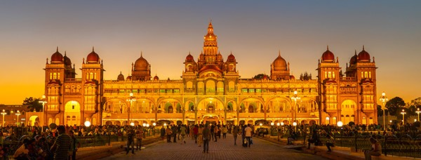

Weather : 23 - 36°C
Label : Top Attraction
Tags : Forts & Palaces
Timings : 10:00 AM - 5:30 PM
Time Required : 2-3 hours
Entry Fee : Adults: ( Indian & Foreigners)INR 70
Children (between 10 and 18 years): INR 30
Students (Study Tour): INR 10
Parking: INR 40 (Car) %INR 20 (Two-wheeler)
The Palace of Mysore (also known as the Amba Vilas Palace) is a historical palace in the city of Mysore in Karnataka.
Designed by the English Architect, Henry Irwin, the Mysore Palace dominates the skyline of Mysore.
A three storied structure in the Indo-Saracenic style built between 1897-1912, the palace has beautifully designed
square towers at cardinal points, covered with domes. The Durbar Hall with its ornate ceiling and sculpted pillars and the
Kalyanamantapa (marriage pavilion) with its glazed tiled flooring and stained glass, domed ceiling are worth noting.
Intricately carved doors, the golden howdah (elephant seat), paintings as well as the fabulous, jewel encrusted golden throne
(displayed during Dasara) are amongst the palace's other treasures. The walled palace complex houses the Residential Museum
(incorporating some of the Palace's living quarters), temples and shrines including the Shwetha Varahaswamy temple.
The palace is illuminated on Sundays,Public Holidays as well as during the Dasara Celebrations where 97,000 electric bulbs are used to illuminate
|

|